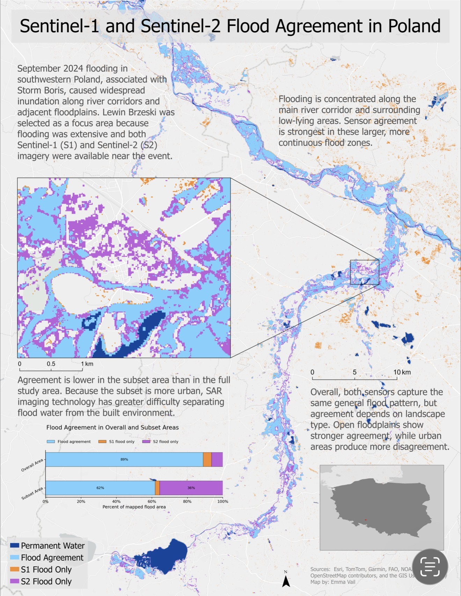

These maps were designed to clearly communicate the spatial agreement between satellite sensors used to observe flooding.
The project compares Sentinel-1 SAR imagery and Sentinel-2 optical imagery to evaluate how differently each sensor identifies flood extent across complex landscapes in Poland.

I used Google Earth Engine and remote sensing workflows to process, classify, and compare flood inundation products derived from multiple sensors.
The results showed that agreement between sensors changes depending on landscape context, urban structure, and water visibility conditions.